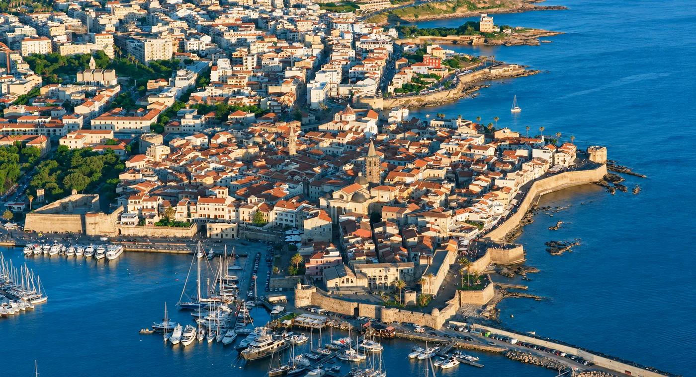

Praktikus alap a tartózkodáshoz
Algherói útmutatók a tartózkodás megtervezéséhez
Strandok, éttermek, látnivalók és praktikus tippek a Venerdì House ajánlásával.

Fő útmutatók
Hasznos ötletek azoknak, akik Algherót a tengerpart, az óváros, az éttermek és a környék felől szeretnék megismerni.

Alghero strandjai
Válasszon Lido, Maria Pia, Le Bombarde, Lazzaretto, Mugoni és Porto Ferro strandjai közül.
Tudjon meg többet
Mit érdemes megnézni Algheróban
Praktikus útmutató óvároshoz, múzeumokhoz, régészethez, természethez és 1 vagy 2 napos útvonalakhoz.
Tudjon meg többet
Hol érdemes enni Algheróban
Éttermek a Venerdì House ajánlásával vacsorákhoz, gyors ebédekhez és kellemes városi estékhez.
Tudjon meg többetEsemények és szezonális ötletek
Események, sportprogramok és szezonális ötletek Alghero felfedezéséhez az év különleges időszakaiban is.

IRONMAN 70.3 Alghero 2027
Dátum, útvonal és praktikus tippek sportolóknak és kísérőknek, akik algherói tartózkodást terveznek.
Tudjon meg többetÉrdeklődne az elérhetőségről?
A Venerdì House körülbelül 100 méterre található a Lido San Giovanni strandtól, közel a tengerhez, az óvároshoz és a szolgáltatásokhoz.